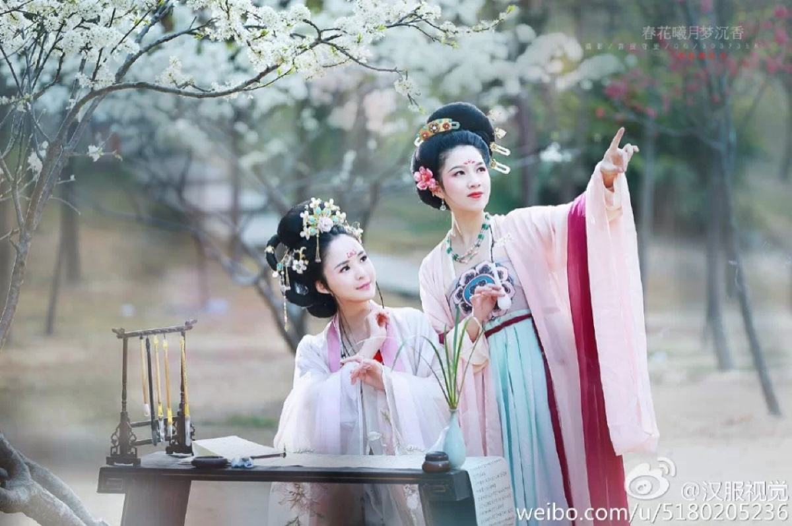
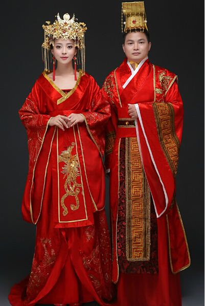

汉服
作者：Cindy 日期：2017-5-16
秦统一中国以后，建立了各项制度，其中也包括衣冠制度。汉朝的礼仪制度由汉高祖的太常叔孙通依据夏商周三代礼仪制度所制定。 西汉男女服装，仍沿袭深衣形式。蝉衣内有中衣、深衣[24] 。西汉时典型的女子深衣，有直裾和曲裾两种，裁剪已经不同于战国深衣。西汉男子深衣外衣领口詹宽至肩部，右衽直裾，前襟下垂及地，为方便活动，后襟自膝盖以下作梯形挖缺，使两侧襟成燕尾状 。汉代女子劳动时喜欢上着断襦，下着长裙，敝屣上面装饰腰带长垂；汉代男子劳动时上着断襦，下着犊鼻裤，并在衣外围罩布裙，这种装束士农工商皆可穿着 。
至东汉明帝，参照三代和秦的服饰制度，确立了以冠帽为区分等级主要标志的汉代冠服制度。服饰在整体上呈现凝重、典雅的风格。秦汉时期的男子，主要穿着的是一种宽衣大袖的袍服，主要分为曲裾袍和直裾袍两类，除了祭祀和朝会以外，其他场合均可穿着。汉代时期的另一个特点是实行配绶制度。汉代女子一般都将头发向后梳掠，绾成一个髻。髻式名目繁多，不可胜举。此外贵族女子头上还插步摇、花钗作装饰。奴婢则多用巾裹头。汉代女子的礼服是深衣，与战国时不同。还有穿襦裙和裤的。汉代对鞋也有严格的等级规定。
魏晋南北朝时期的服饰，受到社会政治、经济、思想等方面的影响，由魏晋的仍循秦汉旧制发展到南北朝时期各民族的相互影响、相互吸收、渐趋融合。这一时期的服饰主要以自然洒脱、清秀空疏为特点。用巾帛包头，是这个时期的主要首服。较为流行的是一种在小冠上加笼巾的“笼冠”。这个时期的汉族男子的服装主要是袖口宽大、不收衣祛约束的衫。汉族女子的发饰也颇具特点，主要是假髻的风行。魏晋时期妇女服装承袭秦汉的遗俗，在传统基础上有所改进，一般上身穿衫、袄、襦，下身穿裙子，款式多为上俭下丰，衣身部分紧身合体，袖口肥大，裙为多折裥裙，裙长曳地，下摆宽松，从而达到俊俏、潇洒的效果。
唐代服饰承上启下，法服和常服同时并行。法服是传统的礼服，包括冠、冕、衣、裳等；常服又称公服，是一般性正式场合所着服饰，包括圆领袍衫、幞头、革带、长筒靴等。品色衣至唐代已形成制度。平民多着白衣。唐代女子的髻式繁复。还有在髻鬓上插金钗、犀牛梳篦的，贵族女子面部化妆成鹅黄、花钿、妆靥等。唐代女服主要为裙、衫、帔。襦裙是唐代妇女的主要服式。在隋代及初唐时期，妇女的短襦都用小袖，下着紧身长裙，裙腰高系，一般都在腰部以上，有的甚至系在腋下，并以丝带系扎，给人一种俏丽修长的感觉。中唐时期的襦裙的比初唐的较宽阔一些，其它无太大变化。
宋代服饰大体上沿袭了隋唐旧制。但由于宋朝长年处于内忧外患交并之中，加上程朱理学等因素的影响，这一时期的服饰崇尚简朴、严谨、含蓄。唐代的软脚幞头这时已经演变为了内衬木骨、外罩漆纱的幞头帽子。皇帝和达官显宦戴展脚幞头，公差、仆役等戴无脚幞头，儒生戴头巾。宋代男子服装仍以圆领跑为主，官员除祭祀朝会以外都穿袍衫，并以不同的颜色区分等级。宋代女子的发式以晚唐盛行的高髻为贵，簪插花朵已成风习。宋代的女裙较唐代窄，而且有细褶；衫多为对襟，覆在裙外 。
元朝时期长衣统称为袍，其样式南北方差异不大，但材料贵贱精粗，却差距悬殊。汉族男性发式变化不多，但北方的汉族女性发式较前简化。明朝建立之初曾力图消除元朝蒙古族服制对汉服的影响，“悉命复衣冠如唐制”，但未能完全贯彻执行。至洪武二十六年才开始确定了许多服制。明朝时期棉布得到普及，普通百姓衣着材料有所改善。明代官员的主要首服沿用宋元幞头而稍有不同。普通百姓服装或长、或短、或衫、或裙，基本承袭了传统服饰样式，并且品种十分丰富。明朝时期，一般人所戴的帽，除了过去流传下来的，朱元璋又亲自制定了两种，颁行全国，士庶通用，即六合一统帽和四方平定巾。